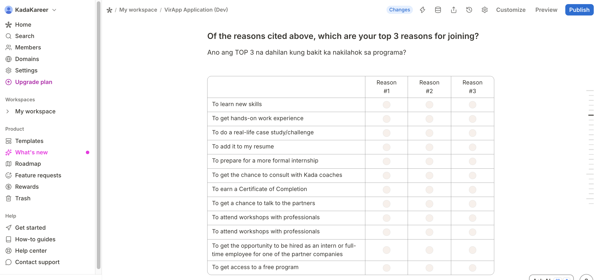

reasonsForProgramParticipation fieldThis question is currently a MATRIX grid (screenshot below) — rows are the ~10 reasons, columns are Reason #1/#2/#3, one radio per cell. Two problems: nothing stops a respondent from picking more than 3 total, and adding/editing a reason means touching all 3 columns of the grid. Switching to Tally's native ranking field (drag/select top 3 of ~8, one list) fixes both — but it's a different field entirely, so the webhook mapping needs to be rewritten for it, not patched to fit the grid.

| What | Where |
|---|---|
| Current mapping only understands flat option lists |
reasonsForProgramParticipation mapping in transformTallyFormData
functions/src/api/webhooks/webhooks.service.ts
filters field.options by which are present in field.value — doesn't fit the current MATRIX grid (rows/columns, no flat options) or the incoming ranking type either, so this needs rewriting regardless
|
| Switch the field type on the Tally form |
Tally form — reasonsForProgramParticipation question
replace the matrix grid with Tally's native ranking field, capped to top 3 of the ~8 options — do this first, since the payload-shape check below needs a real submission against the new field
|
| Confirm the actual payload shape before writing the fix |
POST /webhooks/inspect diagnostic endpoint
webhooks.controller.ts:114
unlike MATRIX (already modeled via MatrixValue/MatrixRow/MatrixColumn in functions/types/tally.ts), there's no existing type for Tally's ranking field — send a real submission through this endpoint to confirm whether value holds option ids or text, and whether it's already ordered/capped to 3
|
| Update the mapping to read the ranking field |
Same reasonsForProgramParticipation block
functions/src/api/webhooks/webhooks.service.ts
map over field.value directly (order preserved) instead of filtering options; look up each entry's display text from options matching by id or text, per the confirmed shape; slice to top 3 as a safety cap regardless of what Tally sends
|